Didot is a serif typeface named after the French Didot family of printers and punch-cutters, with its most famous designs created by Firmin Didot between 1784 and 1811. Linotype Didot™ was later redrawn by Adrian Frutiger in 1991, drawing inspiration from historic specimens such as the Didots’ 1818 edition of La Henriade. The typeface belongs to the Didone, or “Modern,” classification and is recognized for its strong contrast between thick and thin strokes, vertical stress, and delicate hairline serifs. Often associated with refinement and luxury, Didot is widely used in fashion magazines and high-end design, where its dramatic elegance creates a sophisticated, neoclassical aesthetic.
Bodoni
Bodoni is a serif typeface first designed by Italian printer Giambattista Bodoni in the late eighteenth century and remains widely used today. Classified as a Didone, or “modern,” typeface, it is defined by extreme contrast between thick and thin strokes, a vertical axis, geometric construction, and flat, unbracketed serifs. Bodoni followed the ideas of John Baskerville but pushed them further, creating a style celebrated for technical refinement and elegance. Originally appearing around 1790, the typeface became a new standard of typographic beauty and influenced countless later designs. The design embodied Enlightenment ideals of rationality and order by reducing ornamental decoration in favor of geometric form and technical precision. Because of its striking contrast and refined details, Bodoni is widely used today in headlines, titles, and fashion-oriented print design.
Today, Bodoni is often used for display typography and upscale publications because its dramatic letterforms convey sophistication and modernity.
Comparison
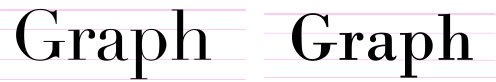
The Didot and Bodoni typefaces next to each other. It becomes obvious, that Didot has a much higher x-height. Furthermore, Bodoni has thicker strokes and in comparison to Didot a little less contrast between the thick and thin strokes, although the contrast in general still remains really high. Both of the typefaces have little space between the ascender line and the cap line.
Similarities
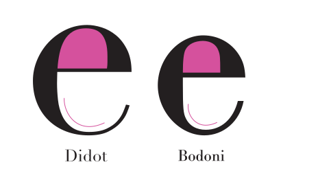
Apart from the different x-height, the letter e of the two typefaces is fairly similar. In both Bodoni and Didot, the bowl is rounded and balanced, and the strong contrast between thick and thin strokes creates an elegant appearance.
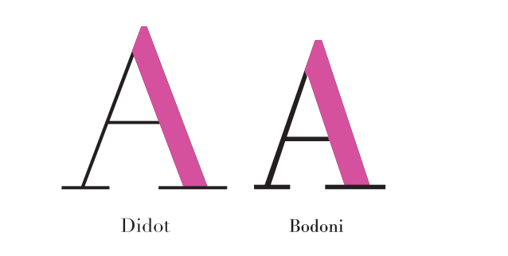
The uppercase letter A of the two typefaces is very similar. Both feature a thin crossbar and a stronger stroke weight on the right side compared to the left. The apex of both letters is flat.
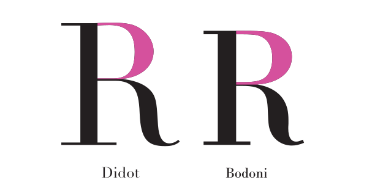
The uppercase letter R is very similar as well. Especially the bowl has the same roundness and curvature.
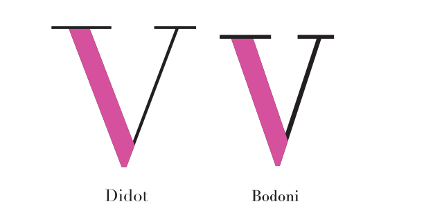
The uppercase letter V is similar in both typefaces, featuring a heavier left stroke and a thinner right stroke.
Differences
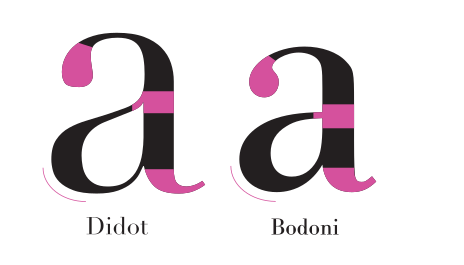
The lowercase letter a reveals subtle contrasts between the two typefaces. Didot’s a appears slightly more delicate, with finer hairlines and sharper transitions, while Bodoni’s version looks more structured and rounded, especially in the ball terminal and the join between bowl and stem
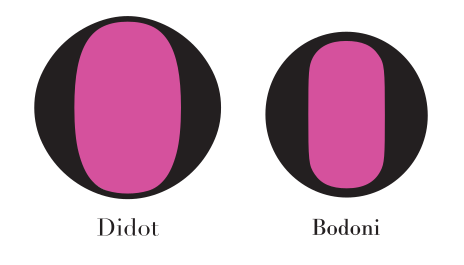
The lowercase letter o depicts differences in the transition from the thicker to thinner strokes. Didot’s o appears more delicate while Bodoni has more stable and clear transitions.
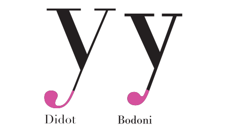
The lowercase y reveals differences in terminal treatment. Didot’s terminal is more elongated and teardrop-like, whereas in Bodoni the stem connects more directly to a round ball terminal.
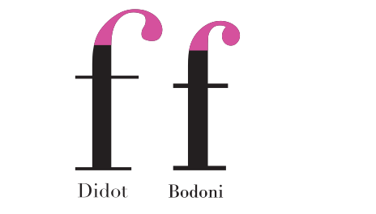
The lowercase f illustrates the same differences as the lowercase y above. Didot’s terminal is more elongated and teardrop-like, whereas in Bodoni the stem connects more directly to a round ball terminal.
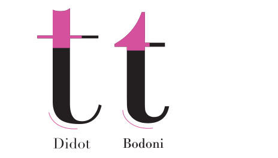
Didot’s lowercase t has a sharper and slightly concave head at the top of the ascender, while Bodoni’s t shows a smoother and more rounded head shape which connects to the crossbar of the letter.
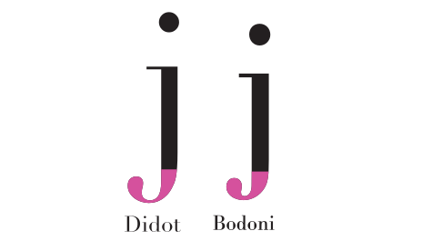
Just like the lowercase y and f, Didot’s lowercase j has a longer and more elegant descender, ending in a slightly stretched teardrop-shaped terminal. Bodoni’s j looks more compact, with a rounder ball terminal and a clearer, more direct transition from the stem into the curve.
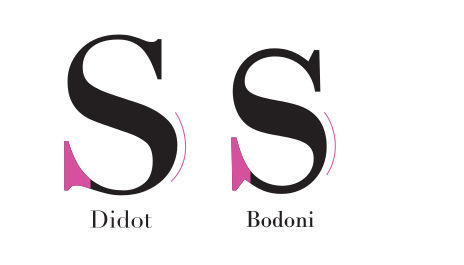
Didot’s lowercase s has a more elongated lower curve and a slightly softer transition into the lower serif. Bodoni’s s appears more compact, with a firmer curve and a clearer, more defined connection to the serif.
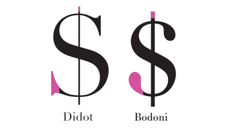
The Didot dollar sign follows the same “s” shape described above, with clear and vertically oriented terminals. In contrast, Bodoni uses more rounded terminals, which visually distinguish it from Didot. Additionally, the vertical stroke in Didot is noticeably thinner.
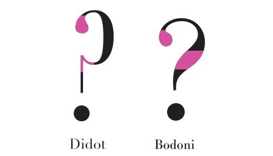
Didot’s question mark features a more delicate curve with a finer transition from the thick upper bowl into the thin vertical stroke, and a slightly more elongated teardrop terminal. In contrast, Bodoni’s question mark appears more compact, with a rounder ball terminal and a firmer, more clearly defined thick–thin contrast in the curved stroke.
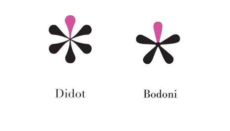
Didot’s asterisk is more symmetrical with 6 points that are teardrop-shaped terminals and taper sharply toward the center. In contrast, Bodoni’s asterisk has 5 points and appears more compact, with shorter, rounder terminals and a heavier central join.
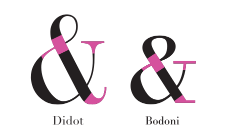
Didot’s ampersand features with softer curves and a more pronounced but smooth contrast between thick and thin strokes, especially in the loop and the descending terminal. In contrast, Bodoni’s ampersand appears more compact, with firmer joins, sharper stroke transitions, and more horizontal, clearly defined terminals.
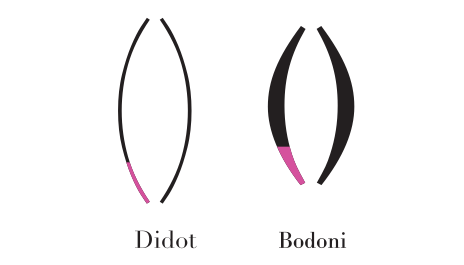
Didot’s parentheses are finer and more delicate, with thinner hairlines and a lighter overall stroke weight. However, Bodoni’s parentheses show a stronger thick–thin contrast, with visibly heavier main strokes and thicker sides.
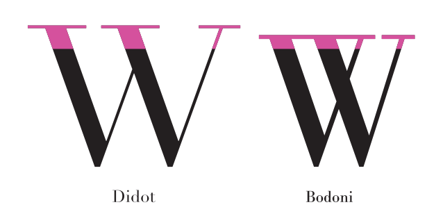
Didot’s uppercase W has narrower top serifs and slightly finer transitions from the serifs into the diagonal stems, giving it a lighter appearance. The letter also has broader proportions than Bodoni. Bodoni’s uppercase W illustrates broader, more horizontal top serifs and stronger thick–thin contrast in the diagonals, resulting in a heavier look. Furthermore, it features four top serifs, since each stroke terminates separately, whereas Didot shows only three.
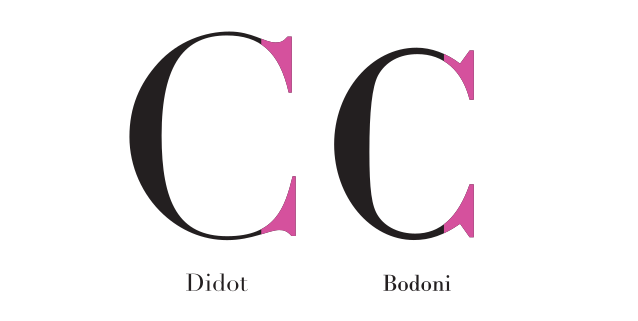
The uppercase C of the Didot typeface has finer, more delicate hairline serifs with a smoother transition into the curved stroke. Bodoni’s C, by contrast, shows more angular and compact serifs with a slightly stronger and more abrupt connection to the main curve.
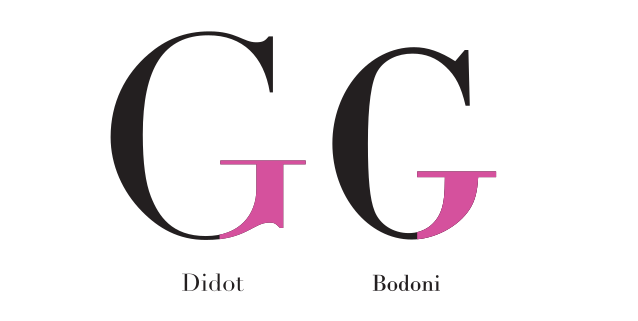
Didot’s uppercase G features a finer horizontal bar with a more delicate transition into the curved stroke and a spur at the lower right. In contrast, Bodoni’s G has a heavier, more defined horizontal bar and no spur is featured.
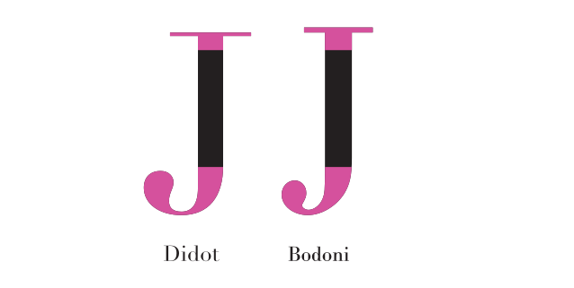
The capital J in Didot is characterized by a longer, more sweeping descender that ends in a slightly elongated terminal. In Bodoni, the descender is shorter and more compact, finishing in a rounder terminal with a stronger and more clearly defined connection to the stem. The serif in Didot is slightly longer than in Bodoni.
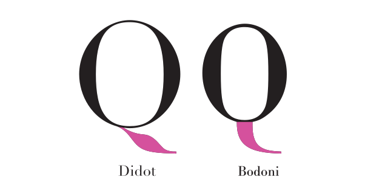
Didot’s capital Q features a longer, more flowing tail that extends outward with a gradual taper. In contrast, Bodoni’s Q has a shorter and more compact tail, with a firmer, more direct connection to the bowl.
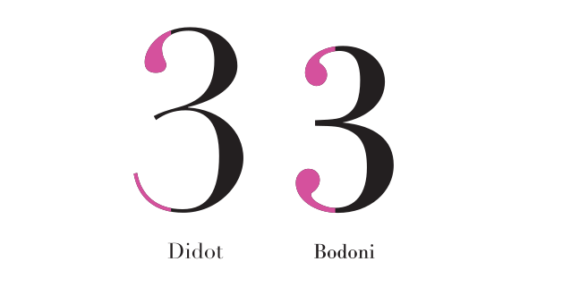
The top terminal of the numeral shows the same differences as described above. However, it is notable that the lower stroke of Didot’s 3 ends in a thin hairline, whereas Bodoni uses the same rounded terminal at the bottom as in the upper part of the numeral.
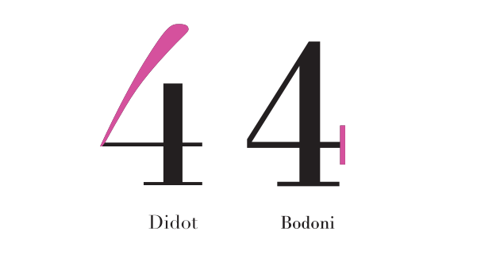
Didot uses an open 4, in which the vertical stroke does not fully connect to the diagonal. The top part of the number thickens gradually. Bodoni employs a closed 4, where the vertical and horizontal strokes are fully connected. Another striking difference is the vertical thin serif.
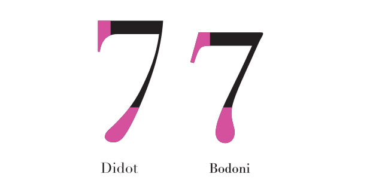
Didot’s 7 follows a continuous curve at the bottom without reversing direction. The serif at the top is vertical. In contrast, Bodoni’s lower curve turns back inward before ending in a round terminal and the top serif has a light side angle.
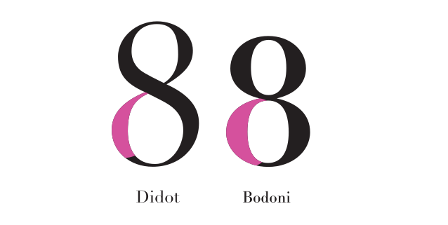
Didot’s 8 shows a more dynamic transition between the upper and lower bowls, with a stronger taper where the strokes intersect. Bodoni’s 8, however, appears more symmetrical and balanced, with rounder bowls and a more even distribution of weight in the lower curve.
Examples and visual references
Didot
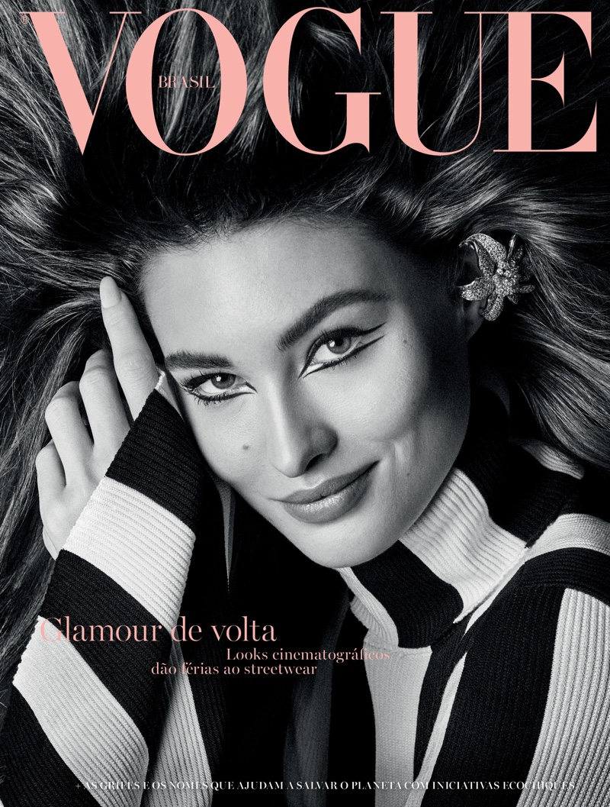
The Didot typeface can be found in fashion magazines, for example on the cover of the “Vogue”The typeface is also used for printed packaging like this garlic infused olive oil. Its refined letterforms elevate the product’s appearance and communicate a sense of quality and craftsmanship.
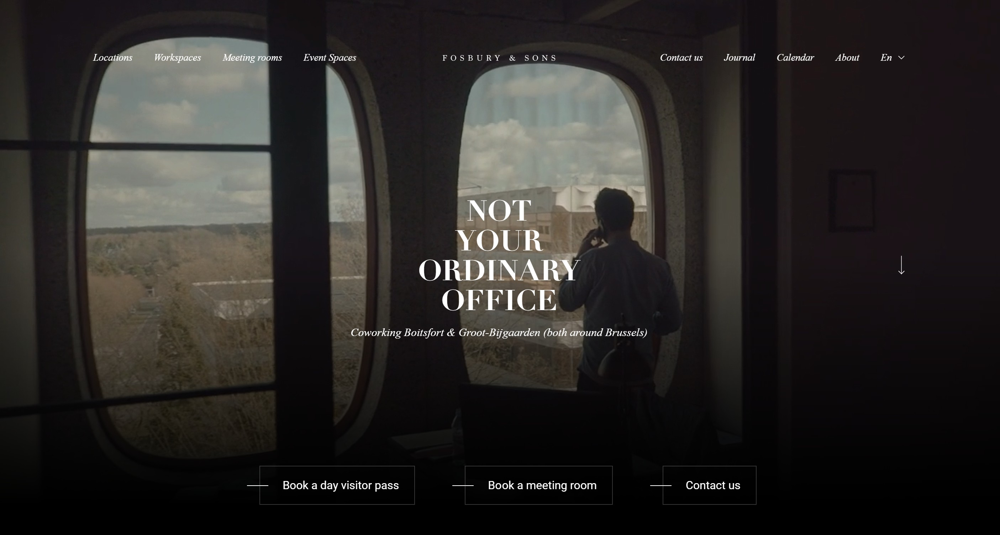
Fosbury & Sons is a Belgian coworking and office concept that blends historic architecture with contemporary design. The use of Didot enhances the brand’s refined, cultured identity by conveying elegance.
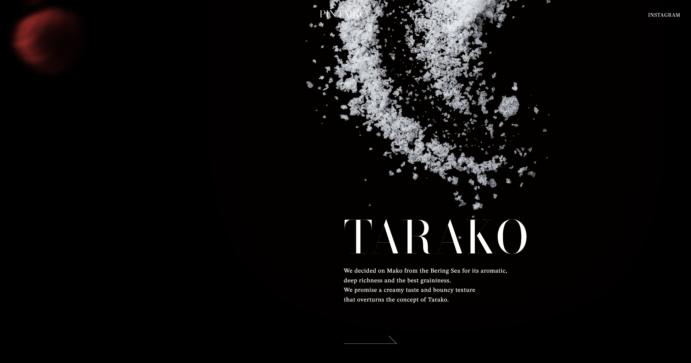
The homepage of the Pintaiko website presents the brand as a refined and premium interpretation of traditional Mentaiko, emphasizing carefully selected fish roe and high-quality ingredients. The use of Didot for eye-catching headlines reinforces elegance, exclusivity, and sophisticated brand identity.
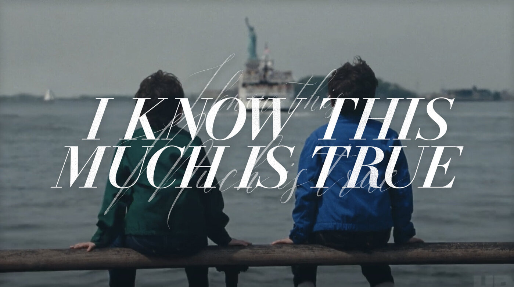
The HBO series “I Know This Much Is True” uses Didot for the main title, combined with a delicate handwritten script layered behind it. The contrast between the monumental uppercase serif and the emotional, personal script creates visual tension.
Bodoni
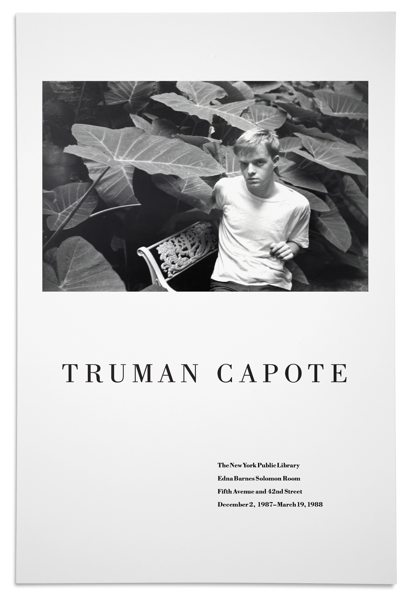
Exhibition poster for Truman Capote, held at The New York Public Library on December 2, 1987 – March 19, 1988. The design pairs a black-and-white portrait with widely spaced Bodoni capitals, reinforcing an elegant aesthetic.“What to say next. Successful Communication in Work, Life, and Love with Autism Spectrum Disorder” was written by Sarah Nannery. For the book cover various fonts were used as well as Bodoni italic. It is paired up with Core Circus.
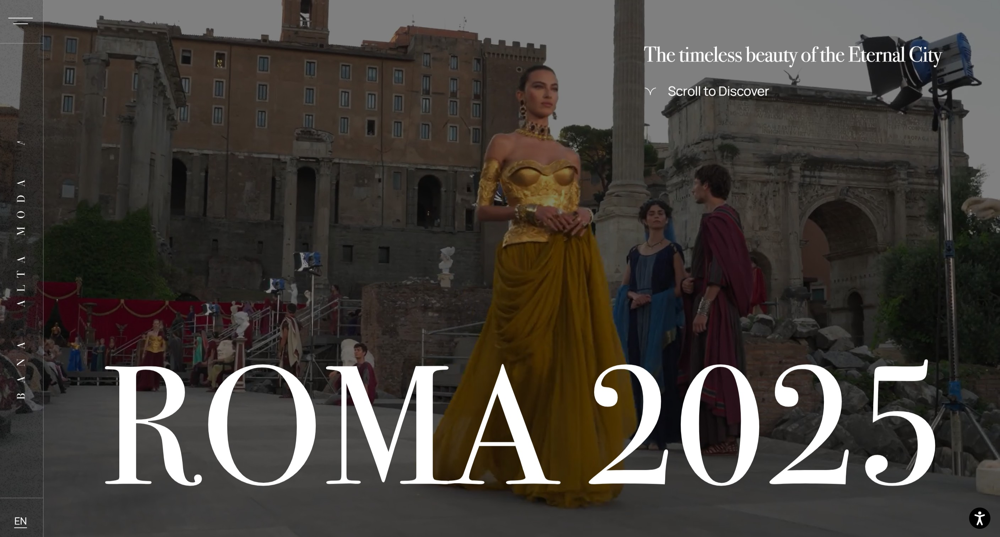
Dolce&Gabbana Alta Moda, the house’s haute couture collection, celebrates Italian artistry and exclusivity. Bodoni’s high contrast and refined serifs complement the collection’s luxury positioning.“Bicycle City” is a book written by Dan Piatkowski. The author states that the bicycle is an important tool for mobility in future urban cities. The Bodoni typeface can be seen in the title “Bicycle City”
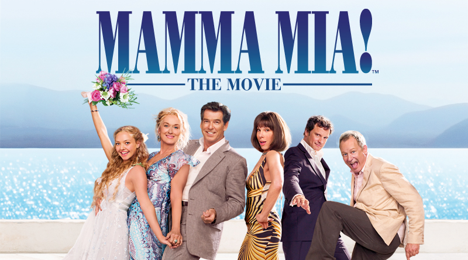
The “Mamma Mia!” headline uses a compressed version of Bodoni with the exclamation mark being slightly altered. Its elegant letterforms and refined details create a theatrical and sophisticated atmosphere.